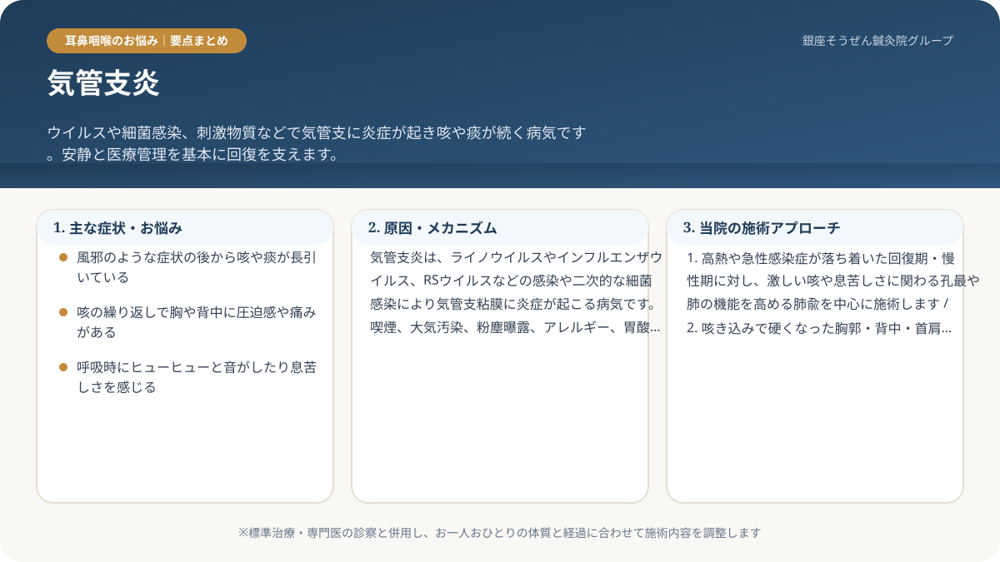

気管支炎の鍼灸
ウイルスや細菌感染、刺激物質などで気管支に炎症が起き咳や痰が続く病気です。安静と医療管理を基本に回復を支えます。
まず知っておきたい要点と改善の流れ

気管支炎は、ライノウイルスやインフルエンザウイルス、RSウイルスなどの感染や二次的な細菌感染により気管支粘膜に炎症が起こる病気です。喫煙、大気汚染、粉塵曝露、アレルギー、胃酸逆流症、慢性副鼻腔炎なども発症や慢性化の原因となります。安静・栄養・十分な水分摂取・加湿を基本とし、高熱や呼吸困難、肺炎への移行が疑われる場合は速やかに内科・呼吸器科での薬物治療を受けることが重要です。
このようなお悩みはありませんか？
- ✓風邪のような症状の後から咳や痰が長引いている
- ✓咳の繰り返しで胸や背中に圧迫感や痛みがある
- ✓呼吸時にヒューヒューと音がしたり息苦しさを感じる
- ✓倦怠感や体力の低下で回復に時間がかかっている
当院の施術アプローチ・改善の流れ
なぜ鍼灸で改善へ向かうのか？（作用機序の図解）
気管支炎に対する鍼灸は、耳周囲・頸部の微小循環改善と聴覚・粘膜調整機序を通じて、お体本来の回復力を引き出します。

翳風・風池・合谷など、耳鼻咽喉領域の神経・血管と連動する経穴へ繊細にアプローチします。
首・顎まわりの深層筋緊張を緩め、内耳や粘膜周囲の滞った血流とリンパ循環を促します。
ストレスや睡眠不足で高ぶった交感神経を鎮め、音への過敏反応や粘膜の過剰反応を和らげます。
標準治療を妨げない設計で、生活支障度（THI等）の軽減と再発しにくい体調づくりを支えます。
院長YouTube解説・関連動画
気管支炎は、風邪に似た症状から痰や発熱が続く病気
気管支炎は、初めに咳や鼻水、発熱などの風邪に似た症状が起こり、数日後痰や発熱が続く病気です。
本来は無菌状態である気管支に細菌やウイルスなどの異物が入ると、咳や痰によって体の外へ出そうとします。しかし、風邪などによって外に出そうとする働きが弱い時に異物が入ってくると、気管支に付着し感染するのです。
長引く風邪だと思っていたら気管支炎だったということもよくあります。早めに改善を行うようにすることが大事です。
気管支炎の主な原因は、ウイルスに感染すること
気管支炎の主な原因は、ウイルスに感染することです。風邪で免疫力が下がった状態の気管支に感染が広がり、急性気管支炎になることが多いのです。
慢性の気管支炎の場合の主な原因は、喫煙です。これは、たばこの煙に含まれる刺激物が関係していると言われています。他にも、大気汚染やアレルギーも慢性気管支炎の原因です。
1. 感染症
気管支炎の最も一般的な原因は感染症です。特に、ウイルス感染が主要な原因となっています。
ウイルス: ライノウイルス、インフルエンザウイルス、RSウイルスなど、多くのウイルスが気管支炎の原因となります。これらのウイルスは、感染すると気管支の粘膜を攻撃し、炎症を引き起こします。
細菌: ウイルス感染の後、細菌が二次的に感染することもあります。特に、ストレプトコッカスやモラクセラ・カタラーリスなどが関与することが知られています。
2. 喫煙
喫煙は気管支炎の大きなリスク因子の一つです。タバコの煙に含まれる有害物質は、気管支や肺の粘膜を刺激し、炎症を引き起こす可能性があります。長期的な喫煙は、慢性的な気管支炎やCOPD（慢性閉塞性肺疾患）の原因となることが多いです。
3. 大気汚染
大気中の浮遊微粒子や有害ガスは、呼吸器に悪影響を及ぼします。都市部や工業地域での大気汚染の影響を受けると、気管支や肺に炎症を引き起こすリスクが増えます。
4. 職業的な曝露
一部の職業では、有害な化学物質や塵埃、ガスなどに日常的に曝露されるリスクがあります。例として、石綿や石油製品、化学工場での作業、農薬の散布などが挙げられます。これらの物質に長期間曝露されると、気管支炎や他の呼吸器の病気のリスクが増加します。
5. 過敏性やアレルギー
アレルギー体質の人や、ある物質に過敏な人は、その物質を吸入すると気管支の炎症を起こしやすくなります。例として、花粉、ペットのフケや毛、カビなどのアレルゲンが挙げられます。
6. その他の病気
心不全やゲルド（胃酸逆流症）、慢性の副鼻腔炎など、他の病気が気管支炎の原因となることもあります。これらの病気は、直接的あるいは間接的に気管支の炎症を引き起こすことがあるため、注意が必要です。
気管支炎は、多くの原因によって引き起こされる病気です。感染症や喫煙、大気汚染などの外部的な要因から、体質や他の病気に起因するものまで、幅広い要因が関与しています。
気管支炎の症状は、風邪の症状が現れ、咳や痰が続くこと
気管支炎の症状は、初めに水っぽい鼻水や喉の痛み、発熱などの風邪の症状が現れ、咳や痰が続くことです。
1番多く現れる症状は咳です。乾いた咳から始まり、段々と痰のからんだ咳になります。咳が続くとだるさや痛みが体に現れることもあります。
痰が黄色や緑色の場合、感染性であると考えられます。白色の場合は感染が原因ではないこともありますが、痰の色だけで気管支炎ではないと判断することはできません。
1. 咳
気管支炎の最も典型的な症状は咳です。最初は乾いた咳で始まることが多いですが、時間が経つと痰を伴う咳に変わることもあります。
乾いた咳: これは、気管支の粘膜の炎症や刺激によって生じます。感染初期や症状の初めの方に特に現れやすいです。
痰を伴う咳: 気管支の炎症が進行すると、粘膜からの分泌物や痰が増加し、それを排出しようとする体の反応として、痰を伴う咳が起こります。痰の色や量、性状は、気管支炎の原因や進行度によって異なることがあります。
2. 胸の痛みや圧迫感
気管支の炎症や咳の繰り返しによって、胸部に痛みや圧迫感を感じることがあります。特に深く息を吸ったときや、強く咳をした時に感じることが多いです。
3. 呼吸困難
重度の気管支炎や慢性気管支炎の場合、気管支の炎症や粘膜の炎症によって気道が狭窄することがあり、これによって呼吸困難が生じることがあります。
4. 発熱
気管支炎が感染症によって引き起こされる場合、発熱が伴うことがあります。特に、バクテリア感染が原因の場合や、気管支炎が肺炎へと進行する場合には、高熱が現れることがあります。
5. 身体的なだるさや倦怠感
身体的なだるさや倦怠感は、感染症や炎症の一般的な症状として現れることがあります。体が病原体と戦っている際の反応として、このような症状が現れることが考えられています。
6. 喘鳴（わずらわしい呼吸音）
気管支の炎症や気道の狭窄により、呼吸時に異常な音がすることがあります。これは、特に深呼吸や運動時に明瞭に聞こえることが多いです。
7. 口の中の異常な味
痰や分泌物がのどや口の中に残ることにより、口の中に異常な味を感じることがあります。この症状は、気管支炎だけでなく、他の呼吸器の病気でも見られることがあります。
気管支炎では、免疫力を上げることが非常に大切
気管支炎では、免疫力を上げることが非常に大切です。免疫力を下げるような習慣を日常的に行なっていないかなど、生活習慣を見直しましょう。
気管支炎は改善を行うことで回復します。薬と同時に栄養をとることとしっかりと休むことを心がけましょう。
突発性難聴・耳管不調・顎関節症のツボ図解
実際の施術ではお一人おひとりの体質・症状に合わせて選穴しますが、突発性難聴・耳管開放症/狭窄症・顎関節症・食いしばりのケアの臨床でよく用いられる代表的なツボの目安です。

📌 代表的なツボの詳細一覧表を開く（6穴） ▼
| ツボ名 | 位置の目安 | 主な狙い | セルフケアの注意点 |
|---|---|---|---|
| 耳門（じもん） | 耳の穴の前上、口を開けるとくぼむ上部 | 耳鳴り・耳閉感・側頭部の緊張緩和 | 突発性難聴は発症48時間以内の耳鼻科受診が最優先です。 |
| 聴宮（ちょうきゅう） | 耳の穴の真ん中の前、口を開けるとくぼむ所 | 内耳の微小循環・聴覚過敏や耳管不調のサポート | 口を軽く開けた状態で優しく触れます。 |
| 聴会（ちょうえ） | 耳たぶの付け根の前、口を開けるとくぼむ下部 | 耳周囲と顎関節の連動緊張を和らげるツボ | 強く押し込まず心地よい範囲で刺激します。 |
| 翳風（えいふう） | 耳たぶのすぐ後ろのくぼみ | 内耳循環と自律神経（迷走神経枝）の調整 | 耳周囲の冷え対策に蒸しタオルも有効です。 |
| 下関（げかん） | 耳の前、頬骨のアーチの下のくぼみ（顎関節部） | 顎関節症・食いしばり・咬筋のこわばり緩和 | 口を開閉して痛みが出る場合は無理に動かさず優しく押します。 |
| 中渚（ちゅうしょ） | 手の甲、薬指と小指の骨の間（拳のくぼみ） | 三焦経の要穴として耳の不調を遠隔から整えるツボ | 耳に触れにくい急性期でも安全に使える遠隔穴です。 |
国際査読論文の科学的エビデンス
国際的な医学データベース（PubMed・Cochrane等）で報告されている突発性難聴・耳管開放症/狭窄症・顎関節症・食いしばりのケア領域の代表的な査読済み鍼灸研究をまとめています（標準治療との併用や研究上の限界を含めて正確に掲載）。
📚 査読論文データ・PubMed出典リンクを開く（4件） ▼
| 年・研究デザイン | 対象・規模 | 主な結果 | 限界・出典 |
|---|---|---|---|
| 2013年 大規模多施設RCT | 季節性アレルギー性鼻炎 422名（ドイツ） | 7〜8週のRQLQ QOLがシャム比0.5点・薬単独比0.7点改善（P<0.001）、頓用薬使用も有意減少（P<0.001）。 | 1年目16週では群間差消失、臨床的意義は慎重評価。 Ann Intern Med (PMID: 23420231) |
| 2021年 メタ解析 | 耳鳴り 8 RCTs（n=504） | 生活支障度THI（MD -10.11, p<0.001）・TSI（MD -8.36, p<0.001）が有意改善。VASは有意差なし（p=0.06）。 | 組入れRCTの質・サンプル規模に限界あり。 Acupunct Med (PMID: 32772848) |
| 2026年 ネットワークメタ解析 | 突発性難聴 36研究（n=3,360・標準治療併用） | ステロイド等の標準治療への鍼灸併用で総有効率RR 1.19（p<0.0001）、3週間コースが推奨。 | エビデンス確実性は低く標準治療（早期ステロイド）併用が前提。 Complement Ther Med (PMID: 42918509) |
| 2023年 メタ解析 | 成人顎関節症 22 RCTs統合（n=471） | 標準治療併用で有効率RR 1.36・疼痛VAS MD -1.23と有意改善。 | GRADE確実性は低〜非常に低、さらなる高品質RCTが必要。 Medicine (PMID: 37746950) |
参考文献・出典
- 2013年 大規模多施設RCT（季節性アレルギー性鼻炎 422名（ドイツ））— Ann Intern Med (PMID: 23420231)
- 2021年 メタ解析（耳鳴り 8 RCTs（n=504））— Acupunct Med (PMID: 32772848)
- 2026年 ネットワークメタ解析（突発性難聴 36研究（n=3,360・標準治療併用））— Complement Ther Med (PMID: 42918509)
- 2023年 メタ解析（成人顎関節症 22 RCTs統合（n=471））— Medicine (PMID: 37746950)
よくある質問（FAQ）
Q. 高熱や強い倦怠感がある急性期でも施術を受けられますか？▼
Q. 咳が長引いて背中や胸が痛いのですが対応できますか？▼
あわせて読まれる関連疾患（耳鼻咽喉のお悩み）
ある日突然片耳などが聞こえにくくなる感音難聴です。発症早期の耳鼻科ステロイド治療を最優先に、早期併用や回復期の耳鳴り・めまいをケアします。
実際には音がないのに耳の中で雑音が聞こえる状態です。耳の血流や自律神経・脳の過敏さを整えるケアで軽減を目指します。
気道壁の損傷により気管支が広がり慢性の咳や痰が生じる病気です。専門医管理を最優先に安定期の呼吸と体力を支えます。
気管の末端である呼吸細気管支に慢性炎症が起こる病気です。呼吸器専門医の標準治療を最優先に、安定期の呼吸を支えます。
喫煙などの有害物質で気道や肺が傷むCOPD。禁煙と呼吸器専門医管理を最優先に、安定期・主治医許可下で呼吸のしやすさを支えます。
発熱や激しい咳、ゼーゼーとした呼吸を起こすウイルス感染症です。感染期は医療機関受診と安静・隔離が最優先（鍼灸禁忌）で、回復期の不調のみ補完的にケアします。
CLINICAL RECOVERY CASES
✨ 実際の臨床改善事例・回復経過を見る
銀座本院をはじめ各院での実際の改善事例を症状別に絞り込んでご確認いただけます。
おひとりで悩まず、まずはご相談ください
銀座本院・川口・大宮・横浜・博多・田無の各院でご予約を承っております。